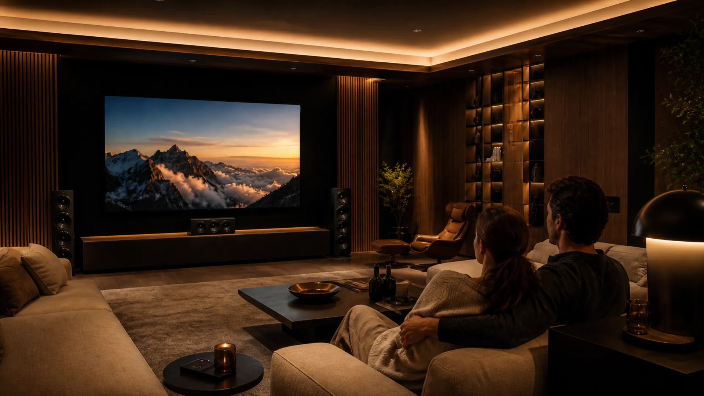
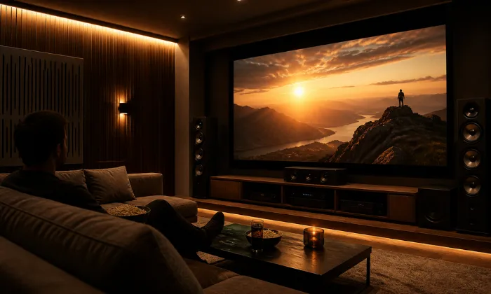
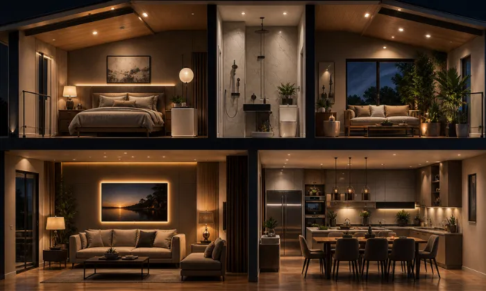
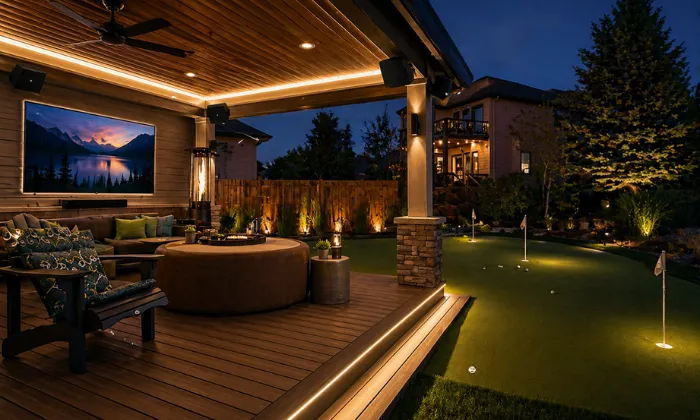
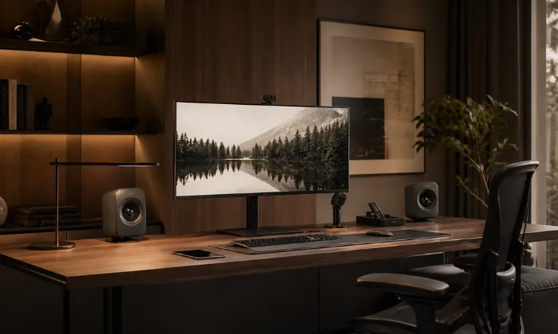
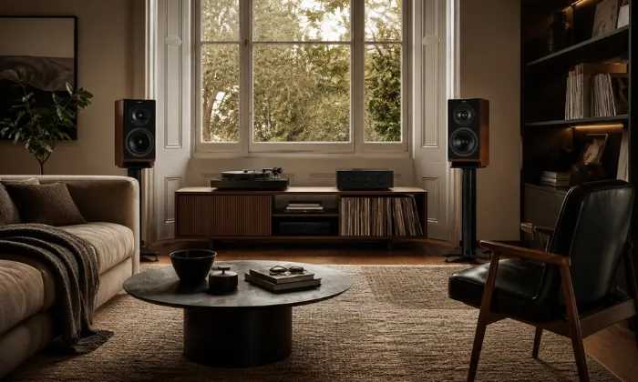
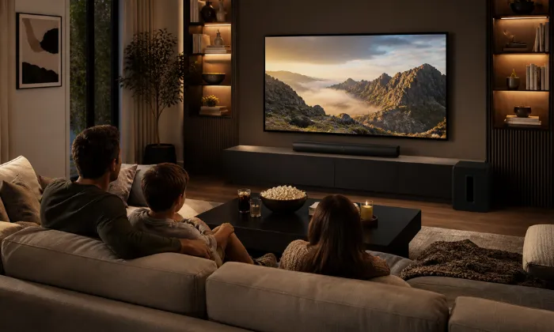

Soluciones de audio y video residencial para casas y departamentos
Diseñamos e integramos sistemas de audio y video residencial para cine en casa, audio distribuido, Hi-Fi, terrazas y espacios de entretenimiento, con selección técnica, instalación profesional y una integración cuidada con la arquitectura y el uso real de cada hogar.
Solicitar asesoría para mi proyectoAudio y video integrados al espacio y a la forma de vivirlo
En muchos hogares se compran pantallas, bocinas, proyectores, barras de sonido, consolas o tornamesas por separado, sin validar compatibilidad, ubicación, cobertura, potencia, cableado, red o condiciones acústicas. El resultado puede ser sonido desigual, imagen limitada, controles complicados, cables visibles o equipos que no trabajan como deberían.
En DG Audiosound diseñamos el sistema como parte del espacio. Definimos ubicación de equipos, rutas de cableado, integración estética, control y configuración para que audio y video se adapten a la arquitectura y a la forma en que cada familia utiliza su hogar.
Audio mal dimensionado o ubicado
Incluso un buen sistema puede rendir mal si no se consideran las dimensiones, los material, la cobertura, la posición de escucha y la ubicación de bocinas o subwoofers.
Integración visual deficiente
Cableado expuesto, pantallas mal ubicadas o equipos sin una ubicación definida pueden afectar tanto la operación como la estética del espacio.
Cine en Casa
- Pantallas o proyección 4K HDR según el espacio
- Audio envolvente y Dolby Atmos cuando aplique
- Instalación, configuración y calibración profesional
Cómo diseñamos un sistema audiovisual residencial
Un proyecto bien integrado parte de la distribución del espacio, ubicación de equipos, rutas de cableado, cobertura, conectividad y posibilidades de crecimiento. Explora los puntos del plano para conocer algunos de nuestros criterios de diseño.

Cine en Casa Dedicado
Diseñamos la ubicación de bocinas, subwoofers y puntos de escucha considerando las dimensiones del espacio, la cobertura, la distribución del sistema y las condiciones acústicas del proyecto.
Por qué un buen diseño audiovisual marca la diferencia
Un sistema bien diseñado permite aprovechar mejor los equipos, mantener compatibilidad entre componentes y lograr una instalación más limpia, funcional y fácil de utilizar.
Integración Estética
Planificamos rutas de cableado, ubicación de equipos y puntos de conexión para lograr una instalación ordenada y coherente con la arquitectura del espacio.
Operación Simplificada
Integramos fuentes, audio, video y controles compatibles para facilitar el uso cotidiano del sistema.
Diseño y Ajuste Acústico
Consideramos dimensiones, materiales, posiciones de escucha, ubicación de bocinas y configuración del sistema para optimizar su desempeño en cada espacio.
Infraestructura Preparada para Crecer
Planeamos rutas de cableado, conectividad y capacidad de expansión para facilitar futuras actualizaciones o ampliaciones del sistema.
Un Proceso Claro para Diseñar, Cotizar e Instalar
Un proceso claro para definir, diseñar, instalar y configurar cada sistema de audio y video de acuerdo con el espacio y las necesidades del proyecto.
Contacto inicial
Nos escribes por WhatsApp y nos cuentas qué espacio quieres mejorar o qué idea tienes en mente.
Diagnóstico
Evaluamos fotos, medidas, planos, hábitos de uso, presupuesto y equipamiento actual.
Diseño de solución
Definimos ubicación, cobertura, cableado, conectividad, compatibilidad de equipos y la propuesta técnica del sistema.
Instalación
Realizamos montaje, cableado, conexiones, configuración y calibración para dejar el sistema correctamente instalado y listo para operar.
Capacitación
Te explicamos de manera práctica cómo operar tu sistema fácilmente y resolver dudas cotidianas.
Soluciones de audio y video para cada espacio del hogar
Cada espacio tiene necesidades distintas de audio, video, cobertura, conectividad y uso. Explora nuestras soluciones residenciales para conocer el enfoque de cada aplicación.

Cine en Casa
Pantallas o proyección 4K HDR, audio envolvente y calibración profesional para crear una experiencia de cine adaptada al espacio.
Ver Solución
Audio Distribuido
Audio por zonas con bocinas de plafón, muro o soluciones discretas, amplificación multizona y control sencillo según el sistema.
Ver Solución
Terrazas y Jardines
Audio y video para terrazas y jardines con equipos seleccionados según la exposición ambiental, cobertura y condiciones de uso.
Ver Solución
Home Office
Audio, microfonía, pantallas, iluminación y conectividad para videoconferencias y trabajo desde casa con una operación clara y ordenada.
Ver Solución
Audio Hi-Fi
Sistemas estéreo de alta fidelidad con bocinas, amplificación y fuentes seleccionadas según el espacio y los hábitos de escucha.
Ver Solución
Family Room & Gaming
Audio y video para películas, streaming, deportes y gaming, con pantalla, sonido y conectividad seleccionados según el espacio y la forma de uso.
Ver SoluciónTecnología seleccionada para cada proyecto residencial
Seleccionamos marcas y componentes de audio y video según el espacio, la compatibilidad del sistema, el desempeño esperado y las necesidades de cada proyecto residencial.
Preguntas frecuentes sobre audio y video residencial
Diseñamos e integramos soluciones de cine en casa, audio distribuido multizona, sistemas estéreo Hi-Fi, audio para terrazas y jardines, Family Room, Home Office e integración audiovisual residencial.
Lo ideal es planificar desde las fases iniciales de obra o remodelación. Esto permite definir canalizaciones, cableado, ubicación de bocinas, pantallas, equipos, racks, alimentación y conectividad antes de cerrar muros o plafones.
Sí. Según el proyecto pueden utilizarse bocinas de plafón, muro o soluciones de integración discreta que reduzcan el impacto visual. La selección depende del espacio, la cobertura requerida, la arquitectura y el nivel de desempeño esperado.
Según la solución y la compatibilidad de los equipos, podemos integrar controles que faciliten el manejo de fuentes, volumen, pantallas y otras funciones previstas en el proyecto.
Nos ayudan mucho las medidas de las habitaciones, fotos o planos arquitectónicos si los tienes, el tipo de uso (música relajante, cine inmersivo, gaming), si está en obra o terminado, y las expectativas generales que tienes para el espacio.
Sí. Podemos revisar amplificadores, bocinas, streamers, proyectores u otros equipos existentes para evaluar compatibilidad, estado, posibilidades de integración y qué componentes conviene conservar o actualizar dentro del nuevo sistema.
Cuéntanos tu proyecto
Cuéntanos qué espacio deseas equipar y qué quieres lograr. Con esta información podremos orientarte mejor antes de definir la solución.
¿En qué podemos
ayudarte?
Podemos orientarte sobre cine en casa, audio distribuido, sistemas Hi-Fi, terrazas, Family Room, Home Office e integración audiovisual residencial. Escríbenos.
Solicita asesoría para tu proyecto
Completa el formulario y se abrirá WhatsApp con la información capturada. Incluye el tipo de espacio, etapa del proyecto y lo que deseas lograr con tu sistema de audio y video.